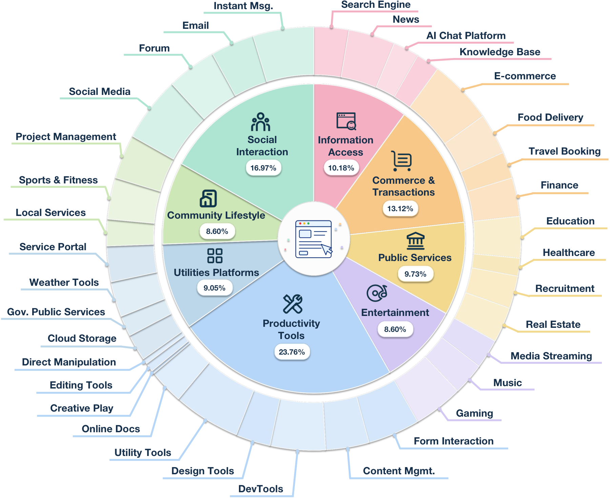
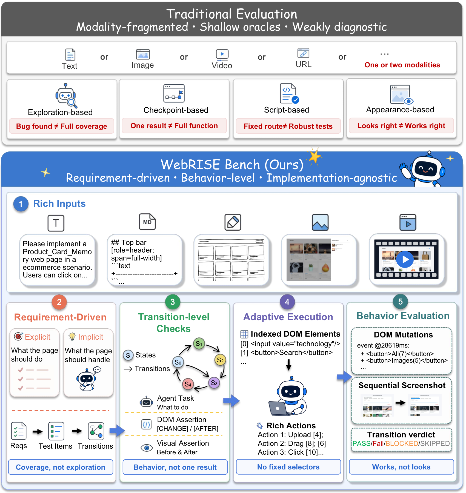
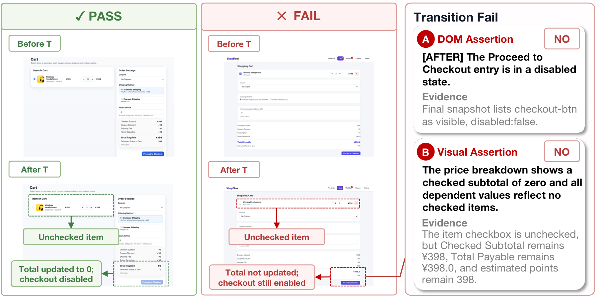
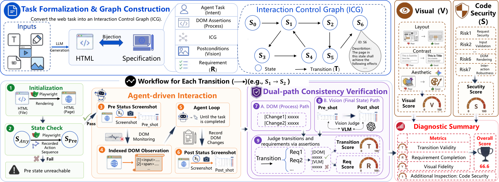

The same contract is tested under Text, Markdown, Sketch, Image, and Video inputs.
Web Artifact Evaluation Benchmark
WebRISE: Requirement-Induced State Evaluation for MLLM-Generated Web Artifacts
WebRISE tests whether generated webpages actually work by compiling requirements into observable UI states, user-intent transitions, and DOM/visual assertions for browser execution.
442
tasks
5
input modalities
5,495
transitions
5,271
requirement checks
Benchmark Coverage
Diverse web tasks with explicit and implicit requirements.
WebRISE spans 8 domains and 35 scenarios. Its contracts cover explicit affordances and implicit state-consistency constraints, allowing errors to be traced back to requirements rather than only local events.
- 8
- application domains
- 35
- domain scenarios
- 2,210
- task-modality instances
- 12,441
- DOM/visual assertions

Overview
Evaluate behavior, not just appearance.
Existing protocols often inspect local evidence: a screenshot, a fixed script, a checkpoint, or an exploration trace. WebRISE turns requirements into Interaction Contract Graphs and verifies the page through adaptive browser interaction.


Pipeline
From multimodal specifications to executable interaction contracts.
WebRISE constructs one task-level contract shared across Text, Markdown, Sketch, Image, and Video inputs. A contract-guided agent executes each transition and dual DOM/VLM oracles score the evidence.

Benchmark Comparison
WebRISE adds requirement-induced state semantics.
Compared with prior web generation benchmarks, WebRISE jointly covers multimodal inputs, interaction, visual evidence, safety diagnostics, and explicit plus implicit requirement checks.
| Benchmark | Verified Units | Main Verdict | Interact. | Vision | Safety | Exp. Req | Imp. Req | Input Modality |
|---|---|---|---|---|---|---|---|---|
| WebCoderBench | 1,572 reqs; 24 metrics | Static evaluation | ✕ | ✓ | ✕ | ✓ | ✕ | 2: Text, Image |
| VibeCodeBench | 100 apps; 964 workflows | Browser agent | ✓ | ✕ | ✕ | ✓ | ✕ | 1: Text |
| Interaction2Code | 127 pages; 374 interactions | Human evaluation | ✓ | ✓ | ✕ | ✓ | ✕ | 1: Image |
| FrontendBench | 148 tasks | Script assertion | ✓ | ✕ | ✕ | ✓ | ✕ | 1: Text |
| WebGen-Bench | 101 instr.; 647 cases | Checkpoint | ✓ | ✓ | ✕ | ✓ | ✕ | 1: Text |
| IWR-Bench | 113 tasks; 1,001 acts; 403 asserts | MLLM assertion | ✓ | ✓ | ✕ | ✓ | ✕ | 1: Video |
| WebRISE | 442 tasks; 5,271 reqs; 5,081 states; 5,495 trans.; 12,441 asserts | DOM/VLM assertion | ✓ | ✓ | ✓ | ✓ | ✓ | 5: Text, Markdown, Sketch, Image, Video |
Leaderboard
Interactive web generation is still far from solved.
Across 14 MLLMs, even the strongest setting leaves roughly one third of transitions or requirement checks unsatisfied. T denotes transition validity, R denotes requirement coverage, and V denotes auxiliary visual quality.
T
Transition validity
R
Requirement coverage
V
Auxiliary visual quality
Safety
HTML safety and robustness diagnostics
Evaluation targets requirement-induced behavior instead of isolated checkpoints.
Explicit user functions and implicit product-level constraints are scored separately.
Even the strongest setting leaves about one third of required behavior unsatisfied.
| Model | Text | MD | Sketch | Image | Video | Overall | ||||||||||
|---|---|---|---|---|---|---|---|---|---|---|---|---|---|---|---|---|
| T | R | V | T | R | V | T | R | V | T | R | V | T | R | V | ||
| Open-weight models | ||||||||||||||||
| Qwen3.6-35B-A3B | 26.8 | 30.5 | 78.2 | 15.5 | 19.2 | 80.8 | 41.2 | 45.4 | 77.0 | 46.6 | 49.6 | 71.7 | 49.5 | 52.2 | 72.8 | 50.5 |
| Qwen3.5-122B-A10B | 38.0 | 41.2 | 56.8 | 42.5 | 45.9 | 72.0 | 38.0 | 42.3 | 74.0 | 40.2 | 43.8 | 70.7 | 42.8 | 47.1 | 71.3 | 51.1 |
| Qwen3.5-27B | 36.3 | 40.0 | 59.9 | 41.7 | 45.5 | 72.1 | 38.6 | 42.7 | 76.8 | 42.6 | 46.7 | 70.6 | 43.1 | 46.9 | 71.8 | 51.7 |
| Qwen3.5-397B-A17B | 45.7 | 49.2 | 64.8 | 51.1 | 54.5 | 75.7 | 46.8 | 50.5 | 78.9 | 48.4 | 51.4 | 72.8 | 49.3 | 52.8 | 72.1 | 57.6 |
| Kimi-K2.5 | 48.5 | 51.9 | 68.9 | 57.0 | 59.6 | 73.8 | 47.8 | 50.4 | 79.9 | 56.9 | 59.1 | 72.6 | 58.6 | 60.3 | 72.9 | 61.2 |
| Qwen3.6-27B | 47.9 | 50.9 | 75.3 | 57.5 | 60.1 | 83.0 | 50.4 | 53.3 | 87.2 | 55.2 | 57.8 | 74.1 | 54.2 | 57.2 | 74.1 | 62.5 |
| Kimi-K2.6 | 44.6 | 47.3 | 83.1 | 51.7 | 54.9 | 87.1 | 47.8 | 51.5 | 86.3 | 58.5 | 60.4 | 73.2 | 63.7 | 65.4 | 73.5 | 63.3 |
| Proprietary models | ||||||||||||||||
| Claude Opus 4.6 | 43.3 | 45.5 | 56.6 | 54.3 | 56.3 | 73.9 | 52.3 | 55.0 | 72.2 | 57.7 | 59.5 | 70.2 | 52.6 | 54.9 | 70.7 | 58.3 |
| Gemini 3 Flash | 44.7 | 48.2 | 71.9 | 50.0 | 54.1 | 79.3 | 46.1 | 49.3 | 85.4 | 54.1 | 57.5 | 72.4 | 45.6 | 48.5 | 70.8 | 58.5 |
| Claude Opus 4.7 | 48.8 | 50.9 | 68.3 | 54.5 | 56.5 | 76.2 | 49.7 | 52.4 | 77.4 | 57.0 | 58.5 | 70.5 | 65.0 | 66.1 | 72.7 | 61.6 |
| Gemini 3.1 Pro | 50.7 | 53.6 | 69.7 | 58.9 | 61.5 | 79.2 | 52.2 | 54.9 | 84.8 | 54.5 | 57.1 | 72.2 | 52.0 | 54.9 | 71.6 | 61.9 |
| Qwen3.6-Plus | 49.3 | 51.9 | 68.2 | 51.7 | 54.6 | 74.5 | 53.8 | 56.4 | 86.3 | 57.5 | 59.4 | 73.8 | 61.7 | 63.4 | 74.8 | 62.5 |
| GPT-5.4 | 59.7 | 61.4 | 78.4 | 60.5 | 62.2 | 79.8 | 57.8 | 60.3 | 86.6 | 60.0 | 62.1 | 71.5 | 63.1 | 64.8 | 73.7 | 66.8 |
| GPT-5.5 | 60.3 | 62.3 | 85.6 | 64.4 | 66.1 | 83.3 | 60.6 | 62.9 | 86.1 | 61.8 | 63.4 | 74.1 | 65.6 | 66.3 | 73.9 | 69.1 |
Bold and underline denote the best and second-best result within each model group.
Citation
Cite WebRISE
Replace the placeholder fields after the arXiv version is public. The citation block is ready for the project homepage.
@misc{webrise2026,
title = {WebRISE: Requirement-Induced State Evaluation for MLLM-Generated Web Artifacts},
author = {Anonymous},
year = {2026},
eprint = {XXXX.XXXXX},
archivePrefix = {arXiv},
primaryClass = {cs.CL}
}